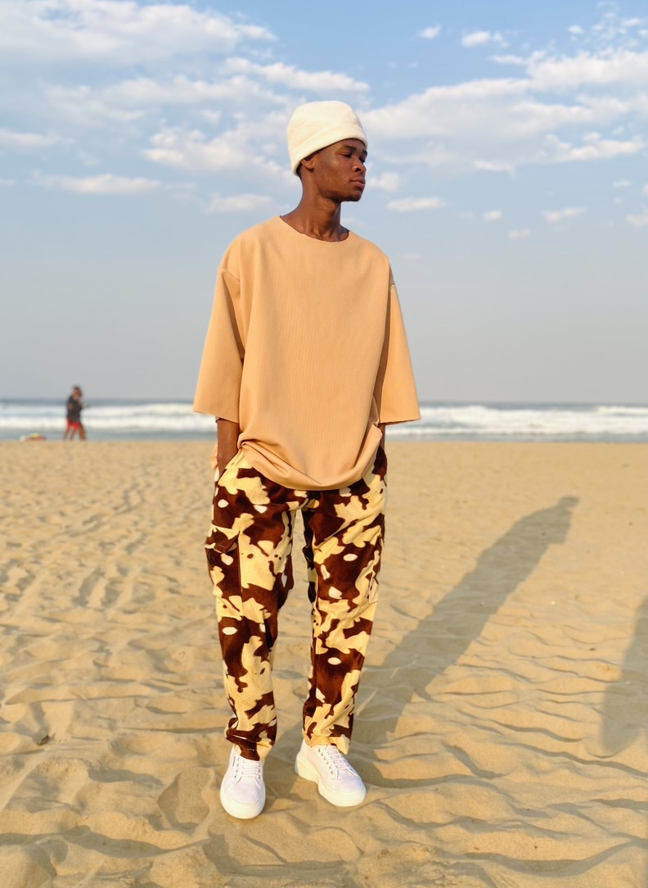
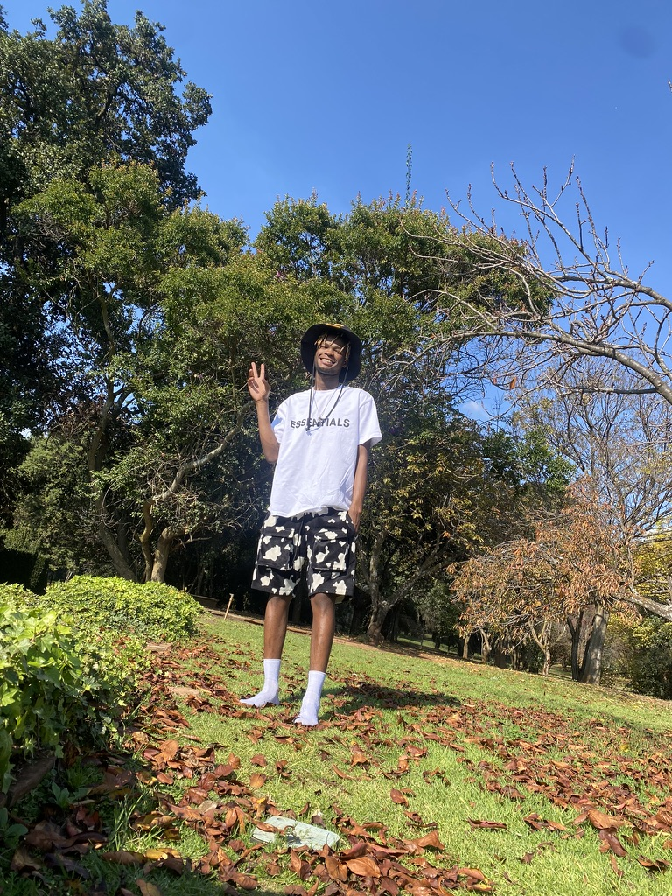

Thuto Machika


I'd love to visit because Cape Town is a destination that captivates visitors with its remarkable blend of natural beauty, cultural richness, and diverse activities. Nestled between the majestic Table Mountain and the expansive Atlantic Ocean, it offers stunning vistas and a variety of outdoor adventures. Visitors can hike or take a cable car up Table Mountain for panoramic views, relax on the pristine beaches of Camps Bay, or explore the scenic Cape Peninsula, home to the iconic Cape of Good Hope. Cape Town's culinary scene is another highlight, offering a fusion of flavors from traditional South African dishes to world-class wines from nearby vineyards in Stellenbosch and Franschhoek. Additionally, the city's commitment to sustainability and innovation is evident in its green spaces and eco-friendly initiatives. With its friendly locals, moderate climate, and an array of activities ranging from adventure sports to wine tasting, Cape Town promises an unforgettable experience for every traveler.
Hindi is the fourth most spoken language in the world and is deeply intertwined with the rich cultural heritage of India. Learning Hindi provides direct access to Indian literature, films, music, and religious texts, offering a deeper understanding of the country’s traditions, philosophies, and arts.
| English | Hindi |
|---|---|
| Hello | Namaste |
| Good morning | shubh prabhaat |
| Thank you | Dhanyavaad |
| Please | Krpaya |
| Goodbye | Alvida |


I have completed a BA Degree Majoring in Information Systems, Economics and Politics
Durban is located in the heart of Zululand. Built for the 2010 FIFA World Cup. Durban July is Africa's greatest horse-racing event.
Pretoria was founded in 1855 by Marthinus Pretorius. It features a statue of Paul Kruger, the former President of the South African Republic. UP is one of SA leading universities found in pretoria.
The name "Polokwane" means "Place of Safety" in Northern Sotho, reflecting the city's role as a refuge and secure area in the region. The city was founded in 1886 by Voortrekkers and was originally named Pietersburg after Petrus Jacobus Joubert